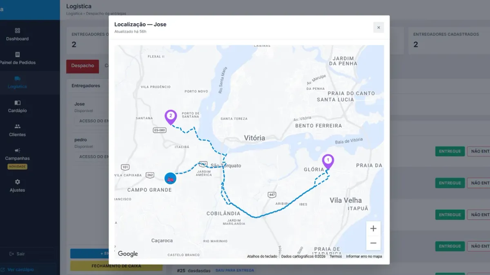

Rota de motoboy para delivery: entregador com rota, troco e GPS no celular

No pico de sexta à noite, a entrega é onde o delivery perde dinheiro: motoboy que sai com um pedido só, endereço errado, troco que não confere, cliente ligando "cadê meu lanche?". Organizar a rota de motoboy é a forma mais barata de entregar mais rápido sem contratar mais gente.
Como montar uma rota de entrega eficiente
- Agrupe por região: pedidos do mesmo bairro ou do mesmo eixo saem juntos. Duas entregas no mesmo caminho custam quase o tempo de uma.
- Defina um limite por saída (ex.: até 3 pedidos) para o primeiro cliente não esfriar esperando o último.
- Ordem de entrega = ordem do caminho, não ordem de chegada do pedido.
- Raio e taxa por bairro combinados com a rota: bairro longe paga mais e entra em rota própria (veja como configurar taxa de entrega por bairro).
- Pedido pronto só sai com tudo conferido: bebida, molho, troco.
Aplicativo para entregadores do Menuzia
Seus motoboys acessam pedidos, rota e valor de troco direto pelo celular. Acaba a papelada e a comanda rabiscada.
- Rota inteligente: o endereço abre direto no Google Maps
- Controle de caixa: troco, forma de pagamento e valor a receber em cada entrega
- Tempo real: o motoboy marca "Entregue" e o painel atualiza na hora
- GPS: você vê onde cada entregador está no mapa e quem está em rota
- Quantas entregas cada um fez e quanto dinheiro está com cada um — base para o fechamento de caixa
Motoboy fixo, freelancer ou por corrida?
Quem está começando costuma pagar por entrega ou diária e só fixa entregador quando o volume é previsível. Seja qual for o modelo, ter o registro de quantas entregas cada um fez evita discussão no acerto. O app funciona para entregador próprio e para parceiro.
Cliente avisado não liga
Quando o pedido sai para entrega, o cliente pode receber aviso automático no WhatsApp — menos ligação, menos mensagem "já saiu?". Veja como configurar o WhatsApp Business para delivery.
Quanto custa
A gestão de motoboys está no plano do cardápio digital: R$67/mês fixo, sem cobrança por entregador e sem taxa por pedido. Organize também a produção com como organizar a cozinha de delivery.
Buscas relacionadas
O que donos de restaurante e delivery pesquisam antes de contratar — cada busca leva para a página que responde a ela:
Perguntas frequentes
O motoboy precisa instalar um aplicativo?
Ele acessa os pedidos e a rota pelo celular. O endereço de cada entrega abre direto no Google Maps.
Consigo ver onde o entregador está?
Sim. A tela de Logística mostra no mapa onde cada entregador está, quem está em rota e quantas entregas cada um fez.
Como controlar o troco e o dinheiro do motoboy?
Cada entrega mostra troco, forma de pagamento e valor a receber. No painel você vê quanto dinheiro está com cada entregador e faz o fechamento de caixa deles.
Cobra por entregador cadastrado?
Não. A gestão de motoboys faz parte do plano de R$67/mês fixo.
Funciona com motoboy freelancer?
Funciona. O app serve para entregador próprio ou parceiro — o registro de entregas ajuda no acerto no fim do dia.
Pare de pagar comissão por pedido
Cardápio digital próprio por R$67/mês fixo. Nossa equipe configura pra você e o suporte está incluso.
Criar Meu Cardápio Agora →